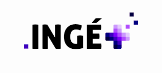
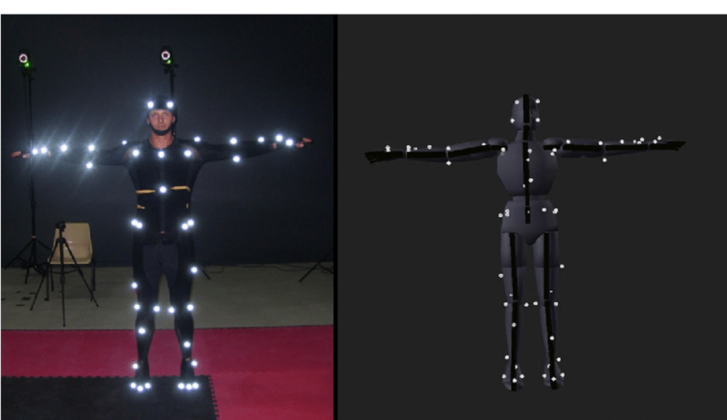
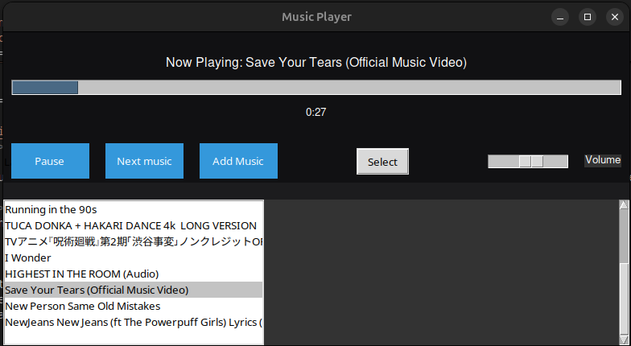

Projects and Experience
Private Lesson Experience

Duration: 6 months
Alongside my studies, I decided to join an association in order to give private lessons to needy students. I had the opportunity to develop and refine various skills. I taught mathematics, tailored my approach to individual student needs, and created customized lesson plans to ensure effective learning. This experience honed my communication skills, patience, and ability to adapt teaching methods to different learning styles.
Key achievements include:
- Successfully helped students improve their grades and understanding of subjects.
- Developed personalized lesson plans and educational materials.
- Received positive feedback from students and parents for my teaching approach and dedication.
More Details
Camera Motion Capture

Duration: July 2024 - ?
I am currently working on a face and body motion capture in order the facilitate animators work. The specifity will be to use multiple camera get a better result. This is be used on Blener on Unreal engine 5
Key achievements include:
- Python coding
- Opencv library
- Imagery process
Music Player

Duration: 3 days
This was actually a challenge. that i tried to code a music player from scratch in Python during a week-end. The initial plan was to add a voice command. However, this technology only works with cloud computing, sending your voice over the internet, then processed on their server. I dont really like those kind of technology since they are not really efficient. All those calculous to just obtain "next" or "pause". Furthermore, to add a music, i am using youtube. Since its not legal i decided to stop using this code although it is somehow tolerated for a personal use.
Key achievements include:
- Python coding
- UI interface
- Cloud AI process
Tempo Mixer
Duration: September 2023
The idea is to mix un music and a chore that share the same tempo, whose style are complitly different. It was a bit tricky to implement, using an SQL databse
Key achievements include:
- Python coding
- Music theory
- MySQL Database
And more ...
View My GitHub